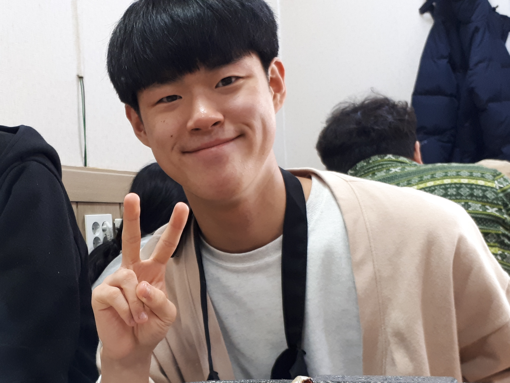

IRI의 창업자 김준성 대표
그는 만 18세에 IRI를 설립하였고, 그는 사람들에게 원하는 정보를 제공하는
인터넷 서비스를 목적으로 사업을 시작하였고, 시작은 아주 작은 웹사이트 였으나
그는 끈기와 인내를 가지고 시간을 투자하여 지금의 IRI를 일궈냈다.
또 그의 옆엔 IRI의 설립과 운영, 개선에 도움을 준 사람이자 김준성 대표의
동업자인 김승중 대표와 김준이 대표가 있다.
김승중 대표는 김준성 대표와 같은 고등학교 출신이다. 창업자 김준성
대표는 학생시절 친구인 김승중 대표에게 같이 동업을 하자는 제안을 한것으로
알려지며, 일화로는 그 당시 그에게 보수로 연봉 4억을 제시한 것으로 유명하다.

또 한 김준성 대표의 또 다른 동업자로 김준이 대표가 있는데,
그 역시 김준성 대표와 같은 고등학교 출신이며, 김승중 대표 이후로 동업제안을
받았다. 그는 IRI의 디자인과 마케팅을 담당하며 IRI의 설립과 창설을 도왔다.